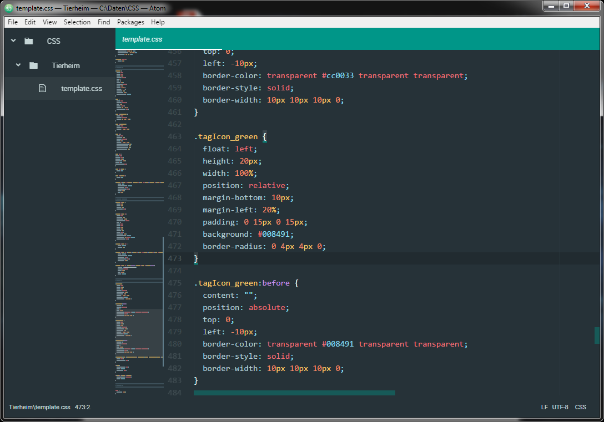

Sinnvolle Erweiterungen für Atom Veröffentlicht am 18.01.2017 - tags: atom, packages Atom lebt ja insbesondere von der guten Konfigurierbarkeit und der großen Anzahl an mehr oder weniger sinnvollen Erweiterungen (Packages). Ich werde hier nach und nach die für mich sinnvollsten Erweiterungen kurz vorstellen. 4 Erweiterungen, die ich sofort installiert habe: minimap emmet highlight-selected open-recent minimap Die Erweiterung minimap bietet für eine geöffnete Datei eine Vorschau auf den vollständigen Inhalt und zeigt den Bereich, den man gerade sieht. Über die Vorscha kann gerade in größeren Dateien schnell navigiert werden.  Weitere Infos: minimap emmet emmet ist eine besonders für Webentwickler sehr sinnvolle Erweiterung zur schnellen Erstellung von XML-, HTML- und CSS-Code. highlight-selected Die Erweiterung highlight-selected ist vor allem beim Programmieren sehr hilfreich, sie zeigt nach einem Doppelklick auf ein Wort (z.B. Funktionsname, Variable) alle anderen Vorkommen des ausgewählten Wortes in der Datei an. open-recent Die Erweiterung open-recent bringt dem Atom-Editor eine Liste der zuletzt geöffneten Dateien.